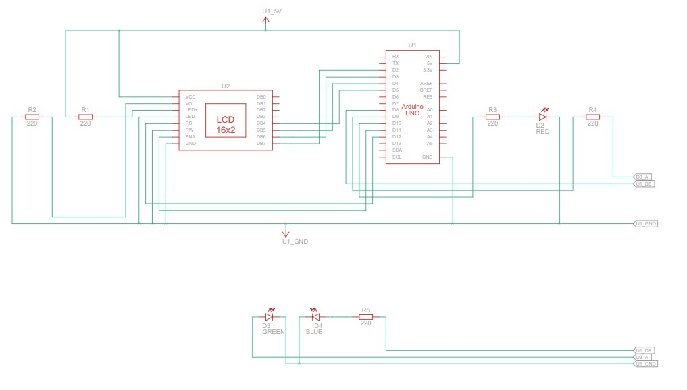
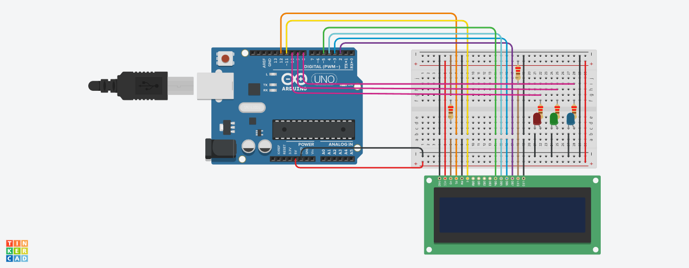
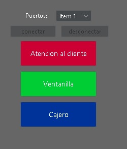
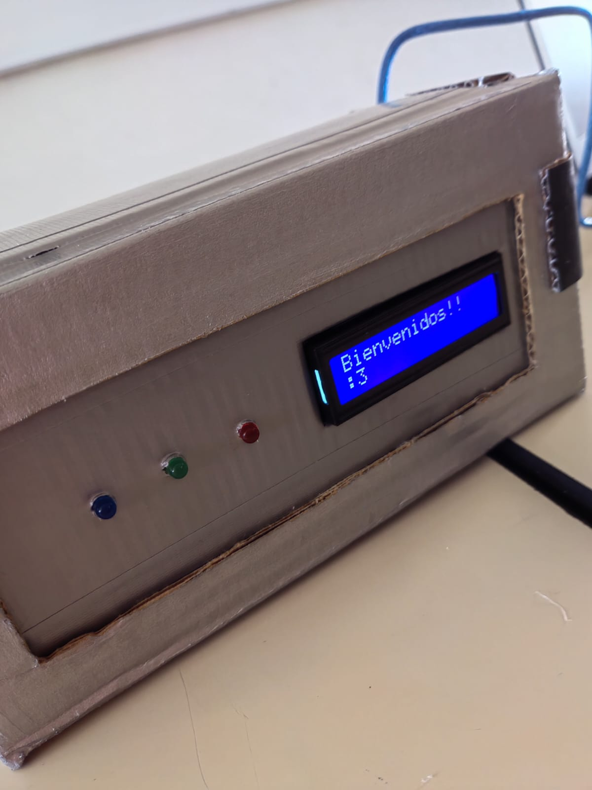
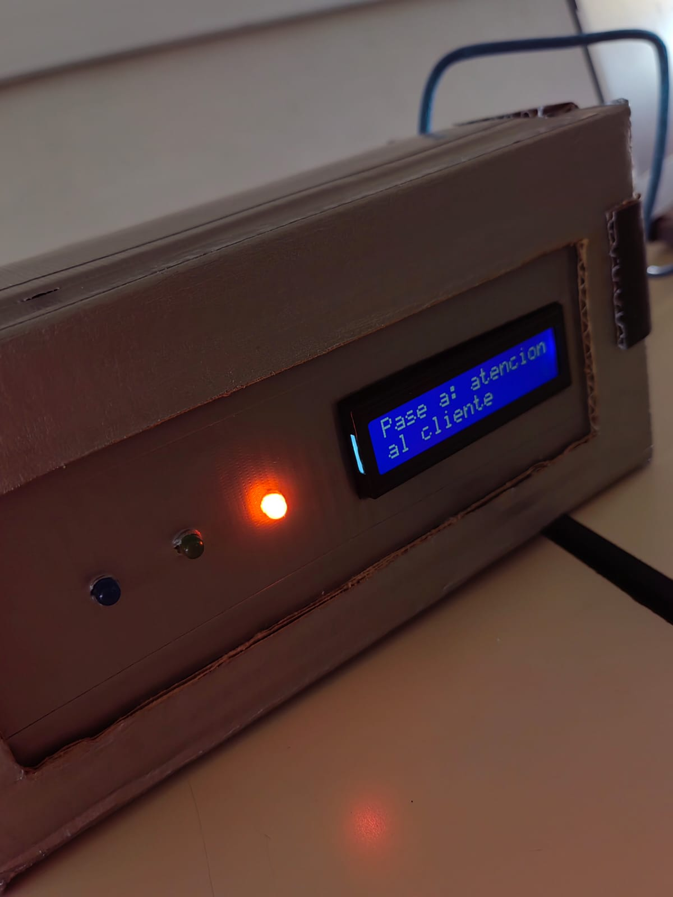
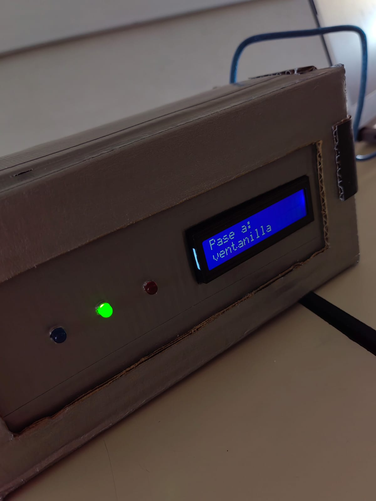
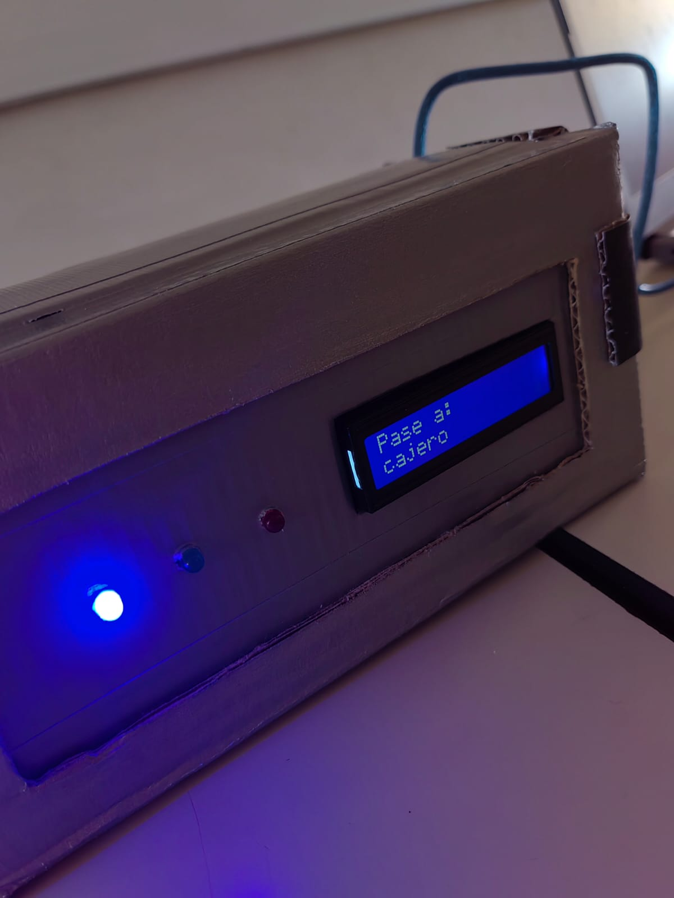

COMUNICACION SERIAL (JAVA-ARDUINO)
El desarrollo de proyectos que combinan Java y Arduino ofrece una amplia gama de posibilidades para crear soluciones interactivas y conectadas. En este caso, nos centraremos en la comunicación mediante un puerto serial, que permite la transferencia de datos entre un ordenador y un dispositivo Arduino.
Java es un lenguaje de programación popular y versátil que ofrece una amplia gama de bibliotecas y herramientas para desarrollar aplicaciones de escritorio, web y móviles. Por otro lado, Arduino es una plataforma de desarrollo electrónica de código abierto que permite la creación de prototipos de hardware y el control de dispositivos mediante programación.
La comunicación entre Java y Arduino a través de un puerto serial implica el establecimiento de una conexión física entre el ordenador y el Arduino utilizando un cable USB. Una vez establecida la conexión, se puede utilizar amplia variedad de bibliotecas para facilitar la comunicación serial en el lado de Java.
ESQUEMAS
*** presiona la imagen para descargar el esquema en formato pdf
CREDITOS
Este proyecto se basa en el video titulado 'Como enviar datos desde Java a Arduino[Usando la LCD]' del canal 'El Profe Ariel' en YouTube. El video proporcionó una guía clara y detallada sobre la comunicación entre Java y Arduino utilizando un puerto serial. Agradecemos al autor por su valioso contenido y orientación. [LINK]
EXPLICACION DE CODIGO ARDUINO
En esta seccion de nuestro sitio web, estara disponible nuestro código de arduino para su descarga en un formato listo para ejecutar.
Ademas, nos enfocaremos en resaltar las partes las importantes del código, tratando de brindar una explicacion clara y precisa para que puedas comprender su funcionamiento.
-
Incluye la librería LiquidCrystal que permite controlar una pantalla LCD.#include <LiquidCrystal.h> -
LiquidCrystal lcd(12, 11, 5, 4, 3, 2);
Crea un objeto lcd de la clase LiquidCrystal con los pines especificados para controlar la pantalla LCD. -
const int led1 = 10;
Declara constantes que representan los pines para los LEDs. -
void setup() { ... }
Inicia la función setup(), que se ejecuta una vez al inicio del programa. -
lcd.begin(16, 2);
Inicializa la pantalla LCD con un tamaño de 16 columnas por 2 filas. -
Serial.begin(9600);
Inicia la comunicación serie con una velocidad de baudios de 9600. -
pinMode(led1, OUTPUT);
Configura los pines de los LEDs como salidas. -
lcd.setCursor(0,0); lcd.print("Bienvenidos!!");
Ubica el cursor en la posición 0,0 de la pantalla y escribe "Bienvenidos!!". -
void loop() { ... }
Inicia la función loop(), que se ejecuta de forma repetitiva. -
if(Serial.available() > 0){ ... }
Verifica si hay datos disponibles en el puerto serie. -
char opc = Serial.read();
Lee un carácter del puerto serie y lo guarda en la variable opc. -
lcd.clear();
Limpia la pantalla LCD. -
if...else if...else
La sección if...else if...else evalúa el valor de opc para determinar qué acción tomar. Por ejemplo:
Si opc es igual a 'a', se muestra un mensaje en la pantalla y se enciende el LED1.
Cada sección del if...else if...else se ejecuta solo una vez cuando se recibe un comando correspondiente y se actualiza la pantalla y los LEDs en consecuencia. -
Serial.flush();
Limpia el búfer del puerto serie. -
delay(1000);
Agrega una pausa de 1 segundo antes de repetir el ciclo.
EXPLICACION DE CODIGO JAVA
En esta seccion de nuestro sitio web, esta disponible nuestro codigo de java para su descarga en un formato comprimido.
*** Es importante saber que este archivo ya trae incluida la libreria utilizada, por lo que no sera necesario tener que realizarlo por tu cuenta.
Ademas, nos enfocaremos en resaltar las partes importantes del codigo, tratando de brindar una explicacion clara y precisa para que puedas comprender su funcionamiento.
Dentro del link encontraras la documentacion de esta libreria y los pasos para implementarla.
CLASE "arduino.java"
La clase "arduino" encapsula la funcionalidad de conexion, envio de datos y desconexion con el dispositivo arduino a traves de la comunicacion serial.
-
import java.io.IOException;
Se importa la clase IOException del paquete java.io para manejar excepciones relacionadas con entrada/salida. -
import com.fazecast.jSerialComm.SerialPort;
Se importa la clase SerialPort del paquete com.fazecast.jSerialComm, que es parte de la biblioteca jSerialComm utilizada para la comunicación serial.
Se recomienda comentar al creador original en este punto. -
private SerialPort puertoSerie;
Se declara la variable "puertoSerie" de tipo SerialPort como atributo de la clase. -
public boolean conectar(int indice){...}
Se define el método "conectar" que establece la conexión con el puerto serial. Toma como parámetro el índice del puerto seleccionado y utiliza los métodos de la clase SerialPort para abrir el puerto, establecer los parámetros de conexión y configurar los tiempos de espera. Luego, llama al método "estaConectado" para verificar si la conexión se estableció correctamente.-
puertoSerie = SerialPort.getCommPorts()[indice];
Se asigna a la variable "puertoSerie" el puerto serie correspondiente al índice proporcionado. Se utiliza el método "getCommPorts()" de la clase SerialPort para obtener una lista de los puertos disponibles, y se accede al puerto específico utilizando el índice. -
puertoSerie.openPort();
Se llama al método "openPort()" del objeto "puertoSerie" para intentar abrir el puerto serie. -
puertoSerie.setComPortParameters(9600, 8, 1, 0);
Se utilizan los métodos "setComPortParameters()" para establecer los parámetros de la conexión. En este caso, se configura una velocidad de baudios de 9600, 8 bits de datos, 1 bit de parada y sin paridad.
*** La paridad es un concepto utilizado en las comunicaciones seriales para detectar y corregir errores en la transmisión de datos. Consiste en agregar un bit adicional al final de cada grupo de bits transmitidos. -
puertoSerie.setComPortTimeouts(SerialPort.TIMEOUT_WRITE_BLOCKING, 0, 0);
Se utiliza el método "setComPortTimeouts()" para configurar los tiempos de espera de la conexión. En este caso, se utiliza el modo "TIMEOUT_WRITE_BLOCKING" que bloquea la escritura hasta que se complete o se produzca un error. -
return estaConectado();
Se retorna el resultado del método "estaConectado()", que verifica si el puerto está abierto.
-
-
public static SerialPort[] getPuertosSerie() {...}
el método "getPuertosSerie" es un método estático que devuelve una lista de objetos "SerialPort" que representan los puertos serie disponibles en el sistema.-
SerialPort puertos[] = SerialPort.getCommPorts();
Se declara y se inicializa una variable de tipo "SerialPort[]" llamada "puertos". Esta variable almacenará la lista de puertos serie disponibles.
Se llama al método estático "getCommPorts()" de la clase "SerialPort" para obtener la lista de puertos serie disponibles. Este método devuelve un array de objetos "SerialPort" que representan los puertos disponibles. -
return puertos;
Se devuelve el array de puertos obtenido en la línea anterior.
-
-
public boolean estaConectado() {...}
el método "estaConectado()" verifica si el puerto serie está abierto o no.-
return puertoSerie.isOpen();
Se utiliza el método "isOpen()" de la variable "puertoSerie" para verificar si el puerto está abierto. Este método devuelve un valor booleano (true o false) que indica si el puerto está abierto o no.
-
-
public boolean desconectar() {...}
el método "desconectar()" cierra el puerto serie.-
return puertoSerie.closePort();
El método "closePort()" cierra el puerto serie y devuelve un valor booleano que indica si el cierre del puerto fue exitoso o no.
-
-
public boolean enviarLetra(char valor) {...}
El método "enviarLetra()" se encarga de enviar un valor de tipo char al puerto serie.
los metodos enviarTexto y enviarNumero funcionan del mismo modo, solo cambia en tipo de valor que envian a traves del puerto serie.-
try{...} catch(IOException ex){...}
Se utiliza un bloque try-catch para manejar posibles excepciones de tipo IOException que puedan ocurrir durante la escritura en el puerto serie. -
puertoSerie.getOutputStream().write(valor);
Se llama al método "write()" del flujo de salida ("OutputStream") del objeto "puertoSerie" para escribir el valor char en el puerto serie. -
puertoSerie.getOutputStream().flush();
Se llama al método "flush()" del flujo de salida para asegurarse de que los datos se envíen completamente. -
return true/false
Se retorna true para indicar que el envío del valor fue exitoso o si ocurre una excepción de tipo IOException, se captura en el bloque catch y se retorna false para indicar que ocurrió un error en el envío del valor.
-
INTERFAZ "interfaz.java"
Nuestro diseño de interfaz se ha desarrollado utilizando la poderosa herramienta JFrame, ampliamente reconocida en el desarrollo de interfaces gráficas en Java. Con su flexibilidad, funcionalidad y una interfaz de programación intuitiva, hemos logrado crear una interfaz atractiva y altamente funcional para nuestra aplicación. JFrame nos ha permitido personalizar la apariencia, agregar componentes y manejar eventos de manera eficiente, mejorando la experiencia del usuario y brindando una funcionalidad sólida.
En nuestra interfaz, hemos implementado la funcionalidad de todos los elementos a través de eventos MouseClicked. Esto significa que cada vez que el usuario realiza un clic con el botón principal del mouse sobre un elemento, se desencadena un evento MouseClicked asociado a ese componente en particular.
-
ComboBox
En este elemento se mostrara el arreglo proporcionado por el método "cargarPuertos()" obtiene una lista de los puertos serie disponibles utilizando el objeto "obj_arduino". Luego, limpia el componente "comboBoxPuertos" y agrega los nombres de los puertos obtenidos a dicho componente. Esto permite mostrar un listado actualizado de los puertos disponibles en la interfaz gráfica. -
Boton - Conectar
Obtiene el índice del puerto seleccionado en el ComboBox, intenta establecer la conexión utilizando el objeto "obj_arduino" y muestra mensajes de éxito o error según el resultado. Además, habilita o deshabilita ciertos elementos en la interfaz gráfica en función del estado de la conexión.-
int indice = comboBoxPuertos.getSelectedIndex();
Se declara una variable local llamada "indice" y se le asigna el índice de la opción seleccionada en el ComboBox "comboBoxPuertos". Esto se obtiene utilizando el método "getSelectedIndex()" del componente. -
obj_arduino.conectar(indice);
Se llama al método "conectar" del objeto "obj_arduino" pasando como parámetro el índice obtenido en el paso anterior. Esto intenta establecer la conexión utilizando el puerto seleccionado. -
if(obj_arduino.estaConectado() == true){...}else{...}
Inicia una estructura de control "if" que verifica si la conexión se ha establecido correctamente. Se utiliza el método "estaConectado()" del objeto "obj_arduino" para realizar esta verificación. -
JOptionPane.showMessageDialog(this, "Conexion realizada");
Si la conexión se ha establecido correctamente, se muestra un mensaje emergente utilizando JOptionPane. El mensaje indica que la conexión se ha realizado correctamente. El parámetro "this" representa la referencia al componente en el cual se muestra el mensaje. -
botones_habilitados(true);
Se llama al método "botones_habilitados" pasando el valor "true". Esto habilita ciertos elementos relacionados con la conexión en la interfaz gráfica. -
JOptionPane.showMessageDialog(this, "ERROR! Conexion no realizada");
Si la conexión no se ha establecido correctamente, se muestra un mensaje emergente utilizando JOptionPane. El mensaje indica que ha ocurrido un error en la conexión. -
conectar.setBackground(Color.red);
Se cambia el color de fondo del botón de conexión a rojo utilizando el método "setBackground()" y la clase "Color". Esto visualmente indica que ha ocurrido un error en la conexión.
-
-
Boton - desconectar
Si la conexión está activa, envía la letra 'd' al Arduino y luego cierra la conexión. Si la conexión no está activa, muestra un mensaje de error y deshabilita ciertos elementos en la interfaz gráfica.-
if(obj_arduino.estaConectado()==true){...}else{...}
Inicia una estructura de control "if" que verifica si la conexión está activa. Utiliza el método "estaConectado()" del objeto "obj_arduino" para realizar esta verificación. -
obj_arduino.enviarLetra('d');
Si la conexión está activa, se llama al método "enviarLetra" del objeto "obj_arduino" y se le pasa como parámetro el valor 'd'. Esto envía la letra 'd' al Arduino, presumiblemente como una señal para indicar que se debe desconectar. -
JOptionPane.showMessageDialog(this, "ERROR! Conexion no detectada");
Si la conexión no está activa, se muestra un mensaje emergente utilizando JOptionPane. El mensaje indica que no se ha detectado la conexión. El parámetro "this" representa la referencia al componente en el cual se muestra el mensaje. -
botones_habilitados(false);
Se llama al método "botones_habilitados" pasando el valor "false". Esto deshabilita ciertos elementos relacionados con la conexión en la interfaz gráfica, presumiblemente para evitar más errores al intentar interactuar con la conexión.
-
-
Boton - Atencion al cliente/ Ventanilla/Cajero
Si la conexión está activa, envía la letra correspondiente al Arduino, presumiblemente para controlar una ventanilla. Si la conexión no está activa, muestra un mensaje de error y deshabilita ciertos elementos en la interfaz gráfica.-
if(obj_arduino.estaConectado()==true){...}else{...}
Inicia una estructura de control "if" que verifica si la conexión está activa. Utiliza el método "estaConectado()" del objeto "obj_arduino" para realizar esta verificación. -
obj_arduino.enviarLetra('b');
Si la conexión está activa, se llama al método "enviarLetra" del objeto "obj_arduino" y se le pasa como parámetro el valor 'b'. Esto envía la letra 'b' al Arduino, presumiblemente como una señal para indicar que se debe accionar o controlar una ventanilla. -
JOptionPane.showMessageDialog(this, "ERROR! Conexion no detectada");
Si la conexión no está activa, se muestra un mensaje emergente utilizando JOptionPane. El mensaje indica que no se ha detectado la conexión. El parámetro "this" representa la referencia al componente en el cual se muestra el mensaje. -
botones_habilitados(false);
Se llama al método "botones_habilitados" pasando el valor "false". Esto deshabilita ciertos elementos relacionados con la conexión en la interfaz gráfica, presumiblemente para evitar más errores al intentar interactuar con la conexión.
-
RESULTADOS
   
Los resultados anteriores reflejan los logros alcanzados hasta el momento. Sin embargo, te invitamos a que modifiques el proyecto y desarrolles tus propias ideas.
En caso de que no dispongas de los materiales necesarios, puedes acceder a la simulación de Tinkercad, la cual, aunque no permite simular la comunicación serial, ofrece la función "Monitor en Serie" ubicada en la sección de código.
Recuerda que la simulación en Tinkercad es una herramienta útil para desarrollar y probar ideas antes de llevarlas a cabo en un entorno físico. Te alentamos a aprovechar esta opción para continuar expandiendo y mejorando el proyecto, y así potenciar tus propias contribuciones y creatividad.